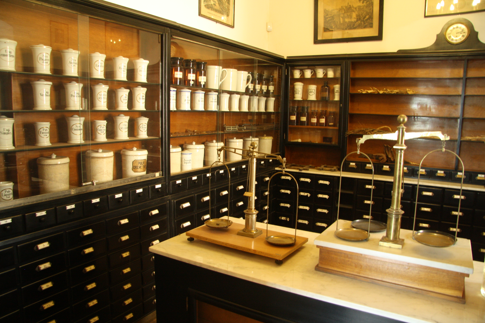

第 20 章时间与脆弱性（Time and Fragility）
主要思想
- 林迪效应（Lindy effect）：对书籍、技术、观念这类承载信息的"不易损"事物，每多存活一天，预期寿命反而可能拉长——已存在 N 年的事物，预期还能再存在约 N 年，旧事物因此比新事物更可能长存。
- 新事物狂热症（neomania）与跑步机效应：对"新"本身的盲目崇拜是一种脆弱性来源；我们天生只注意变动而忽略恒常，于是在"升级—厌倦—再升级"的循环中不断付出金钱与注意力。
- 用否定法看未来：预测"什么会死"远比预测"什么会活"容易——脆弱的东西终将毁坏且可被识别；减去注定消亡的新潮，剩下的就是未来（读旧书！）。
- 时间即混乱：反脆弱从波动与混乱中受益，而时间正是持续施压的混乱本身；能存活下来的事物，往往契合某种我们看不见的深层目的。
原文引用
"反脆弱性意味着——和我们起初的本能直觉恰好相反——旧优于新，而且远比你所想的要优。……时间会证明它的脆弱性，并在必要的时候毁掉它。"
——支撑本章总论点："新"并不天然可靠，时间才是最公正的裁判。
"对易损的东西来说，每多活一天，都会缩短额外的预期寿命。对不易损的东西来说，每多活一天，可能意味着预期寿命拉长。"
——支撑林迪效应：这正是"旧优于新"背后的核心机制。
"就是将不属于将来日子的东西从未来消除。也就是利用否定法。脆弱的东西最后一定会毁坏；幸运的是，我们能够判断什么东西脆弱。"
——支撑"用否定法看未来"：预测的要诀不在添加新事物，而在减去脆弱者。
"只上市一年的书籍，通常不值得一读……存在十年的书会再存在十年；存在两千年的书，应该会存在相当长的一段时间。"
——支撑"读旧书"的实践准则：把有限的阅读时间押在被时间筛选过的对象上。
生活案例
手机迭代与跑步机效应
每年新品发布会后总有人熬夜抢购新机型，尽管新旧差异不过是像素与边框的微调；购机瞬间兴奋冲顶，数周后幸福感退回原状，又开始惦记下一代——塔勒布在书中举的正是新款 Mac 与旧款 Mac 的对比。解读：电子产品让人只盯着版本间的差异，却忽视共同功能早已够用；按林迪效应，真正长存的是"通信、记录"这类古老需求，而非任何一代爆款机型。
网红打卡店与街角老店
排队三小时的网红餐厅常在一两年内悄然关张，而开了三十年的老面馆依旧日日客满。解读：网红店存活时间短，其预期剩余寿命同样短；老面馆历经无数食客的口味检验与竞争冲击而不倒，时间已替我们完成了反脆弱性的筛选。
知识付费新概念与读经典
以"颠覆认知"为卖点的新名词课程年年热卖、年底即被遗忘，而《论语》《国富论》历经百年仍在被反复引用。解读：作者对学生直言"尽量不要读过去二十年内的书"——把注意力从追逐热点转向经典，正是普通人在信息洪流中可行的否定法：先减去注定速朽的噪声。
本质：时间是最强的压力测试；经由数代人筛选而存活的事物，自带被验证过的反脆弱性——未来并非凭空想象的新奇之物，而是深藏于经受住时间考验的过去之中。
第 21 章医学、凸性与不透明（Medicine, Convexity, and Opacity）

主要思想
- 医疗决策的不对称规则：干预的收益随病情加重而加速上升——重症者的治疗具有凸性回报（值得一搏），轻症者的干预收益小、伤害大且延后，医源性损害占上风。以高血压为例：病情温和时用药，18 人中仅 1 人受益；病情严重时，3 人中就有 2 人受益。
- 警惕对"证据"的迷信：在因果不透明的复杂系统里，"没有证据证明有害"不等于"证明无害"；举证责任应当倒置——不自然的新事物必须自己证明利益，而不是要求自然与传统先自证清白。
- 经验优于理论：理论来了又走，经验却一直留着；宗教与传统习俗（如禁食）是经漫长时间筛选的默认选项，其隐含智慧优先于未经检验的新发明。
- 医疗伤害的第一原则：不需要有证据证明受到伤害，就可以宣称某种药物或不自然的疗法是危险的——因为伤害在未来，而不在狭义界定的过去。
原文引用
医疗伤害的第二个原则：它不是线性。对于几乎健康的人，我们不应该冒险；但是对于处在危险中的人，则应该冒高出很多的风险。
——直接点出本章核心：该不该干预，取决于病人处在曲线的哪一端。
受到医疗伤害的是病人，不是治疗本身。如果病人接近死亡，那就应该鼓励所有的投机性治疗方法——毫无保留。相反的，如果病人近乎健康，应该由大自然当医生。
——重症端放开手脚、轻症端交还自然，正是杠铃式的凸性策略。
"你有证据吗"的谬误，误将"缺乏造成伤害的证明"当作"证明没有造成伤害"。
——反式脂肪、沙利度胺的伤害潜伏数十年才显现，"暂时没看到伤害"不是安全的证明。
我们生而盲从于理论。但是理论来了又走；经验却一直留着。
——传统习俗不必先有机理解释，千年有效性本身就是最强证据。
生活案例
感冒就输液、吃抗生素
普通感冒多由病毒引起、多可自愈，但"输液好得快"的执念让许多人一发烧就要求抗生素与静脉滴注。书中警告：每次服用抗生素，都在帮助细菌突变成耐药菌株，"你将身体的反脆弱性移转给细菌"。这正是轻症干预的典型负凸性——眼前的小收益，换来延后且隐形的代价。
体检指标引发的过度焦虑
体检单上某项数字略超"正常"，便立刻陷入焦虑、开始服药。塔勒布在午宴上量出血压略高，同桌医生当场开降压药，他把处方丢进了垃圾桶——之后自测发现血压总体偏低，只是天然波动。他提醒，"经常去看医生，尤其在没有生命危险的疾病或者不舒服的状况中去看医生……是有害的"；而药厂热衷于把"正常"重新分类为"高血压前"，背后的目的往往只是增加用药。
管理中的过度干预
新任经理一到位就急于"做点什么"：改流程、换工具、频繁开会复盘。这与急诊室坚持给肿胀的鼻子冰敷如出一辙——肿胀本是大自然的修复反应，干预本身成了目的。对近乎健康的系统，最好的做法是克制：先减害、别添乱，把自我修复的空间还给组织。
本质：在不确定中决策，先看"错误的代价"朝哪个方向，再看证据强度——这就是 Via Negativa（否定法）：先减害，后增益。
第 22 章活得长久，但不要太久（To Live Long, but Not Too Long）
主要思想
- 减法医学（medicine by subtraction）：健康更多来自停掉伤害——糖、烟、过度用药与过度治疗，而非不断增加新的治疗。塔勒布甚至估计，削减非急需手术的医疗支出，反而可能延长富国人口的寿命。
- 医疗伤害主要源自"干预偏误"与想要做点事的冲动：对危急病例，医疗收益大、伤害小；对轻微病痛的过度干预，往往弊大于利。
- 身体对食物摄入的随机性具有反脆弱性：间歇性禁食、饥饱交替、随机摄入蛋白质，才是人类被"设计"出来的进食方式；规律三餐加零食不断，恰恰违背了这一结构。
- 为什么我不想永生：一个系统的反脆弱性来自其组成部分的死亡；个体终会退场，基因与信息才能延续，群体才得以新陈代谢与进化。
原文引用
去除一些东西，可能是相当有力（而且实证上是较为严谨）的行动。
这是"减法医学"的核心宣言：去掉伤害本身，就是一种最有力的治疗。
吸烟的有害影响，大约等于战后以来发展出的每一种医疗干预合起来的好处……戒烟带来的好处，高于我们能够治疗每一种可能的癌症。
用"戒烟"这一件减法，就能抵过战后全部医疗干预的加法——减去伤害往往胜过叠加治疗。
禁食的压力因子因此产生反脆弱性，因为它会使想吃却吃不到的食物尝起来更加美味，并使我们的身体系统出现幸福愉快的感觉。开斋的感觉，和宿醉刚好相反。
饥饿是良性压力因子：适度的剥夺加上充分的恢复，让身体与心情都变得更好，而非更糟。
一个系统的反脆弱性来自各个组成的死亡……我的信息，也就是我的基因，也就是我里面的反脆弱性，才应该寻求永生，而不是我寻求永生。
个体的死亡是系统进化的燃料；该追求不朽的是基因与信息，而不是"我"这个载体。
生活案例
先戒掉那杯奶茶，再谈养生
很多人一边喝着全糖奶茶、鲜榨果汁，一边吞维生素片、囤"零负担"零食，恰好印证书中那句"称作'健康'的东西通常都不健康"。与其做加法，不如先减去精制糖与含糖饮料——这一步几乎零成本，收益却可能超过一切补充剂。
16+8 轻断食：让身体重新体验"饿"
把进食压缩在 8 小时内、留出 16 小时空窗，本质是恢复饥饱之间的随机波动。现代人从早到晚零食不断，恰恰消灭了这种波动；而"想吃却吃不到"会让开斋那一餐格外香甜——这正是压力因子带来的反脆弱性，与运动后的畅快是同一种机制。
头痛别急着吃止痛药
书中指出，依赖止痛药等于放弃用试错法找出头痛的真因——睡眠不足、颈部紧张或压力过大。同理，指望靠一把药丸"续命"（如库兹韦尔每天吞下近两百颗药丸）是加法式的幻觉；先减掉熬夜、久坐与坏情绪，往往比任何补剂都更有效。
本质：健康靠"减法"获得——去掉伤害比增加治疗更接近实证的核心；而死亡是个体献给系统的最后贡献：正因个体会退场，基因与信息才得以延续，整体的反脆弱性才得以成立。